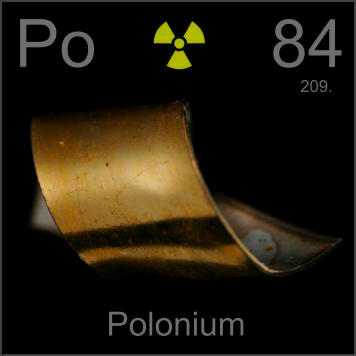

HOME
PREVIOUS
NEXT

Polonium
Atomic Weight: 209[note]
Density: 9.196 g/cm
Melting Point: 254 °C
Boiling Point: 962 °C
Radioactive polonium foil is used in antistatic brushes as an electron source. The foil is silver with a thin plating of polonium, and an even thinner plating of gold over that. The gold is what you actually see.